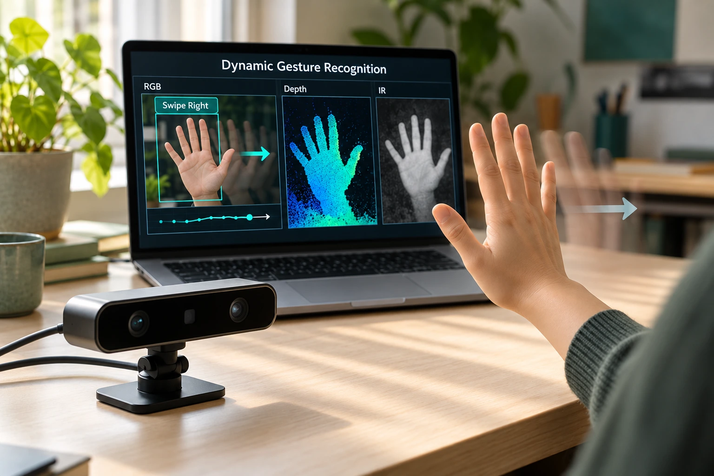

Dynamic Hand Gesture Recognition
Recognising hand gestures using RGB and depth data, including in low light.

What this project does.
RGB images provide rich visual detail, but changing illumination makes reliable recognition more challenging. This project combines colour and depth information to model gestures as movement over time.
A multimodal deep learning system combining RGB and depth data from stereo cameras for dynamic hand gesture recognition in low-light environments.
How it works.
A CNN–LSTM architecture models spatial features and temporal motion. Depth sensing provides additional information when illumination varies.
01CaptureRGB + depth+
Stereo cameras provide complementary views: appearance and distance.
02UnderstandCNN–LSTM+
Spatial feature extraction is combined with temporal modelling across the gesture sequence.
03InteractLive inference+
The real-time pipeline recognises gestures from live input for interactive applications.
My contribution.
Developed the multimodal system and implemented a real-time inference pipeline for live gesture recognition.
A live gesture-recognition pipeline using RGB and depth inputs with a CNN–LSTM architecture.
A different way
to see things.
Colour shows appearance. Depth shows distance. Combining perspectives is at the heart of my gesture recognition work.
Interactive illustration · not a live model prediction